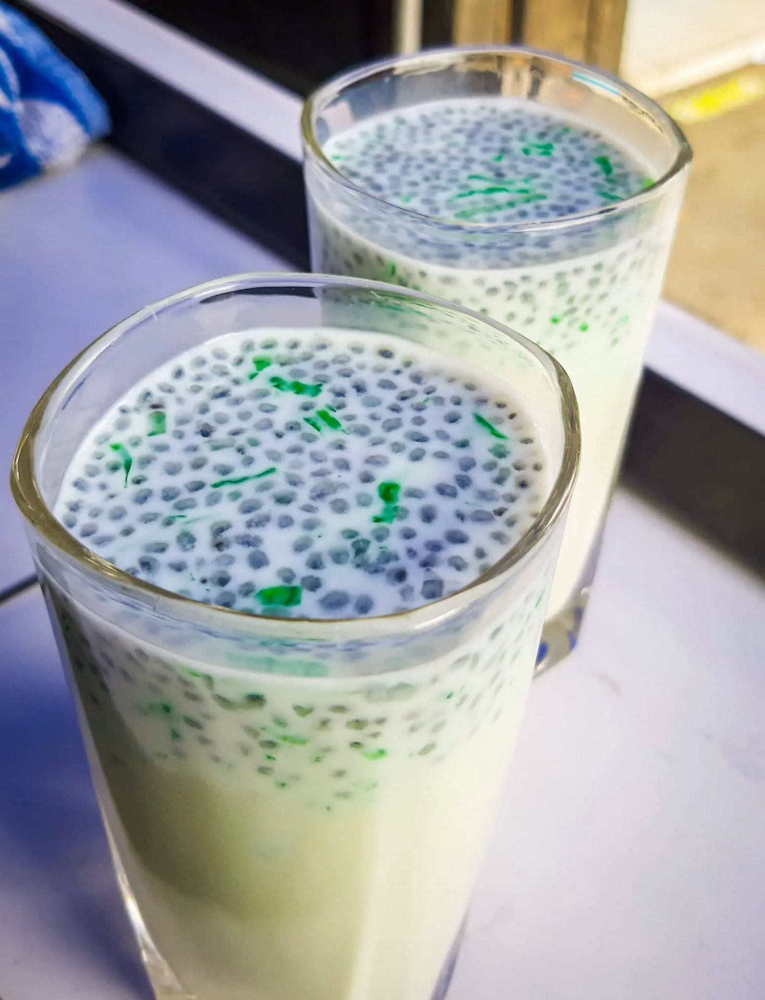

Alouda Glacer !

Ingredient
- 2 tablespoons basil seeds,
- 1 cup chopped agar agar strips,
- 1 litre cold milk,
- 500 ml water,
- Crushed ice,
- Vanilla essence,
- Almond essence,
- Sugar to taste,
- Food colouring.
Steps
- Put the basil seeds in a flat dish and remove any non-seed material.
- Chop the agar agar strips into 12 mm (half inch) pieces. Separate the strips. Agar agar strips can be obtained from Asian shops.
- If you cannot get agar agar strips, use set gelatine jelly, grated or chopped into small pieces. Alternatively, use tapioca strips.
- Soak the basil seeds and chopped agar agar strips in 500 ml water overnight. Alternatively, soak in luke warm water until the seeds are well swollen and the agar agar strips are soft to the touch.
- Make sure that the milk is very cold. Pre-cool your serving glasses in the fridge. Put sugar into the milk and sweeten to taste. Pour the sweetened milk into glasses until two thirds filled. Put two drops of your favourite essence and two drops of your favourite food colour in each glass. Mix well together. Put in three to four tablespoons of the swollen basil seeds and softened agar agar strips (alternatively the gelatine jelly pieces) in each glass. Mix well together. Top with crushed ice.
How to enjoy it ?
Sip it after the main plate or a hard day at work